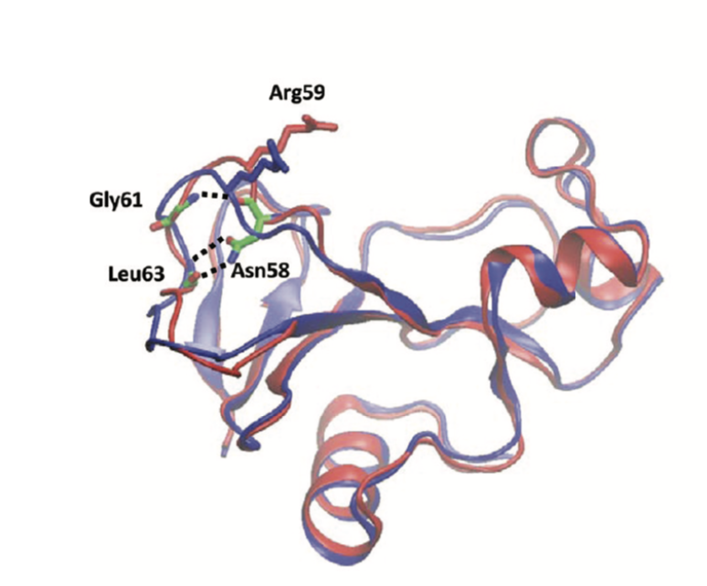

 My research focus is: Simulation study of multi-timescale biochemical & biophysical events such as DNA repair, motion-coupled biomolecular recognition, and enzymatic reactions.
I am also interested in: Development of simulation techniques to describe complex systems and enhance efficiency of biomolecular simulations.
I love my group! Click the link!
Dr.Wei Yang's Group